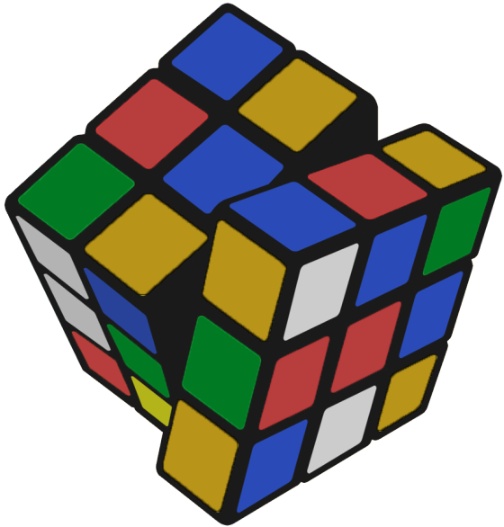

Autres projets
Ce site a été réalisé dans un cadre pédagogique.
Cette année, les élèves du département MMI de Montbéliard se sont penchés sur la question de la face cachée du web.
Découvrez leurs projets ci-dessous !
Broken Mirror

Les DATA du CLOUD

The War

Ed' éco

Polluting video games

J.A.R.V.I.S
Verax
Rescom

Unfaced

Future.Of.The.World